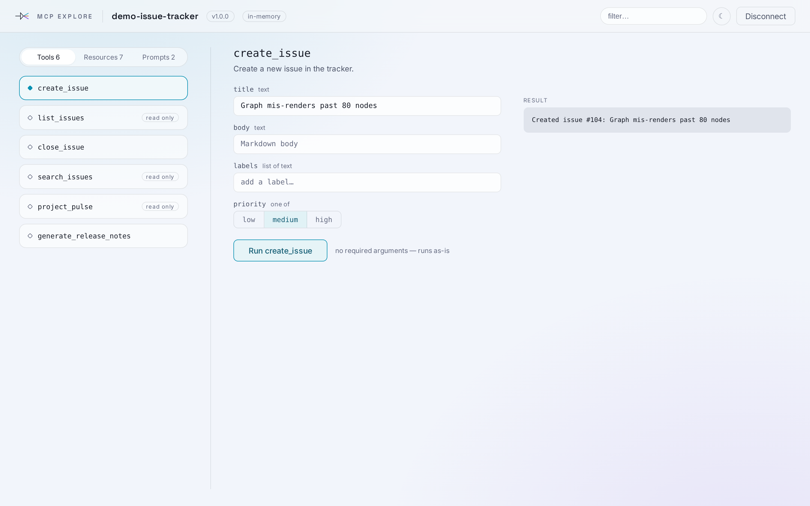
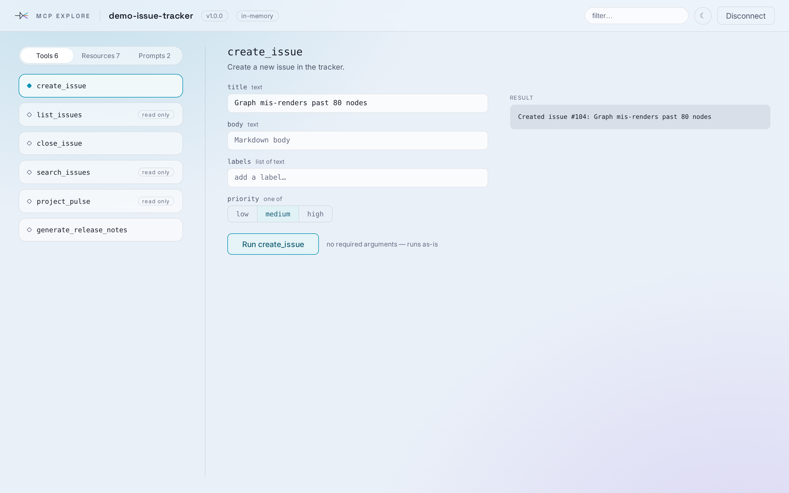
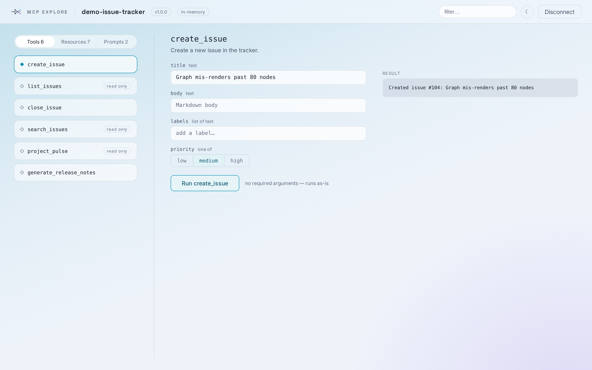

Background strength
Option 2, same layout throughout — only the canvas gradient changes. Contrast figures are measured off these renders: smallest grey text (--ink-3) against the most saturated canvas pixel behind it. The project's validated floor is 4.5:1.
A — today
Teal 0.07 / violet 0.05 on #f4f6fa. What you called too faint.
worst contrast 4.65:1 — passes
 open ›
open ›B — 1.7×
Teal 0.13 / violet 0.085 on #f2f5fb.
worst contrast 4.42:1 — marginal

open ›C — 2.6×, cooler base
Teal 0.20 / violet 0.12 on #eaf0f8, header band tinted to match.
worst contrast 4.05:1 — below floor with today's ink

open ›D — directional wash
Linear blue sweep from the top-left instead of a radial bloom, violet radial bottom-right.
worst contrast 3.89:1 — below floor with today's ink

open ›E — C with --ink-3 darkenedRECOMMENDED
Same canvas as C; smallest grey text moves #666c82 → #5a6070. Colour as strong as C, contrast back above the floor.
worst contrast 4.88:1 — passes
open ›